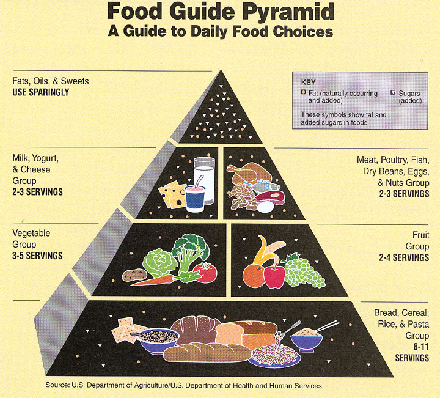

WHAT COUNTS AS A SERVING?
Bread, Cereal, Rice, and Pasta Group (Grains Group)—whole grain and
refined
- 1 slice of bread
- About 1 cup of ready-to-eat cereal
- 1/2 cup of cooked cereal, rice, or pasta
Vegetable Group
- 1 cup of raw leafy vegetables
- 1/2 cup of other vegetables cooked or raw
- 3/4 cup of vegetable juice
Fruit Group
- 1 medium apple, banana, orange, pear
- 1/2 cup of chopped, cooked, or canned fruit
- 3/4 cup of fruit juice
Milk, Yogurt, and Cheese Group (Milk Group)*
- 1 cup of milk** or yogurt**
- 1 1/2 ounces of natural cheese** (such as Cheddar)
- 2 ounces of processed cheese** (such as American)
Meat, Poultry, Fish, Dry Beans, Eggs, and Nuts Group (Meat and Beans
Group)
- 2-3 ounces of cooked lean meat, poultry, or fish
- 1/2 cup of cooked dry beans# or 1/2 cup of tofu counts
as 1 ounce of lean meat
- 2 1/2-ounce soyburger or 1 egg counts as 1 ounce of lean meat
- 2 tablespoons of peanut butter or 1/3 cup of nuts counts as 1 ounce of meat
Click to go back